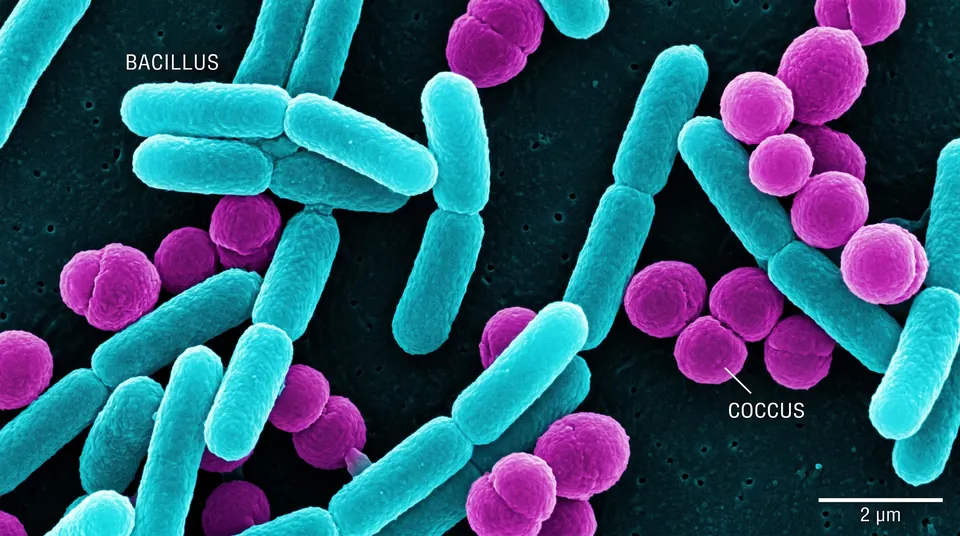
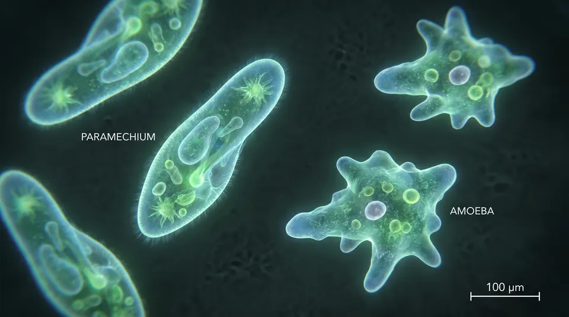
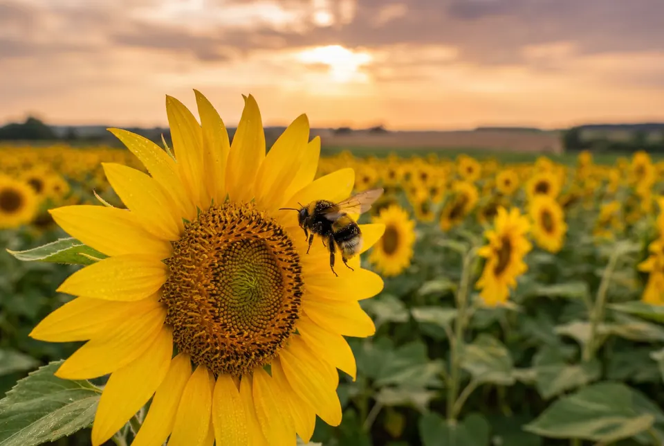
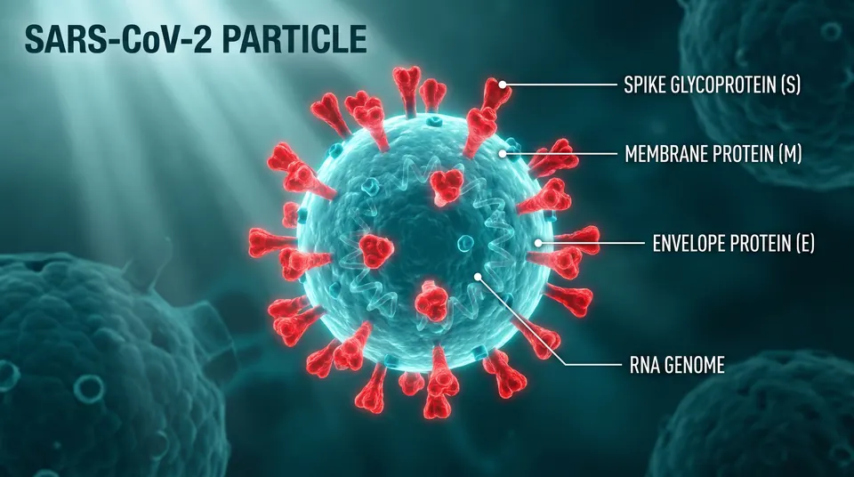

Cinco grandes grupos para ordenar la biodiversidad. Más una frontera fascinante: los virus, que no entran en ningún reino.
En la Tierra hay millones de especies. Clasificar no es poner etiquetas al azar: es agrupar organismos por características compartidas (tipo de célula, nutrición, organización) para estudiar la biodiversidad y entender el parentesco entre las formas de vida.
En la escuela usamos el sistema de cinco reinos propuesto por Robert Whittaker. Es una herramienta clara para 1° año. La ciencia moderna también habla de dominios (Bacteria, Archaea, Eukarya), pero acá nos quedamos con los reinos escolares.
Tabla comparativa: tipo celular, organización, nutrición y pared celular.

01 · MoneraBacterias y cianobacterias. Procariotas unicelulares: los más antiguos y abundantes del planeta.

02 · ProtistaAmebas, paramecios, diatomeas. Eucariotas diversos: el cajón de sastre de la clasificación.
Hongos, levaduras y mohos. Heterótrofos por absorción, con pared de quitina. Grandes descomponedores.

04 · PlantaePlantas autótrofas con cloroplastos y pared de celulosa. Base de casi todas las cadenas tróficas terrestres.
Animales pluricelulares, heterótrofos por ingestión, sin pared celular. Desde esponjas hasta mamíferos.

Frontera · VirusNo son células ni pertenecen a un reino. Tienen genoma y evolucionan, pero no metabolizan solos. El gran debate.
Después de los reinos viene la jerarquía: Filo, Clase, Orden, Familia, Género y Especie. Con el ejemplo de Homo sapiens.